The Build
A custom PVC waterfall arc, built for a standard above ground pool.
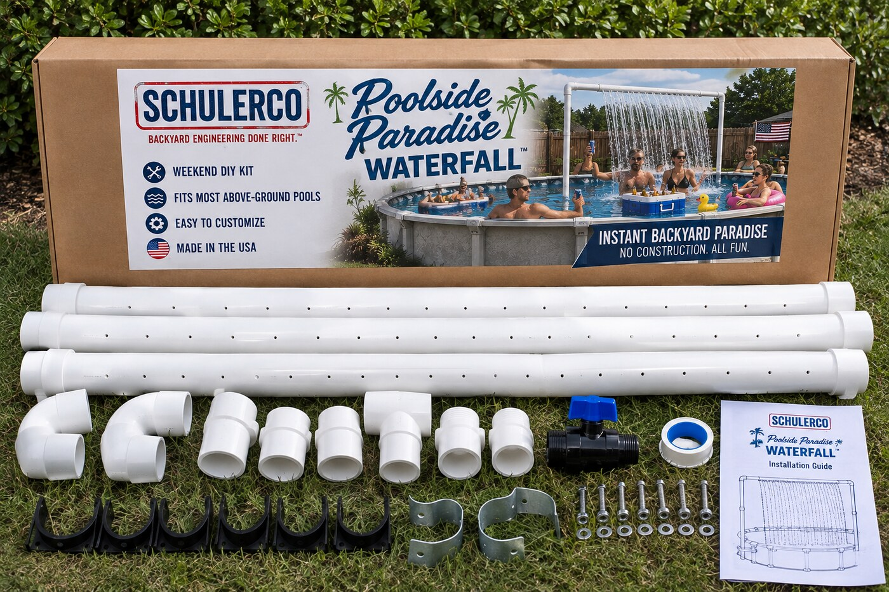
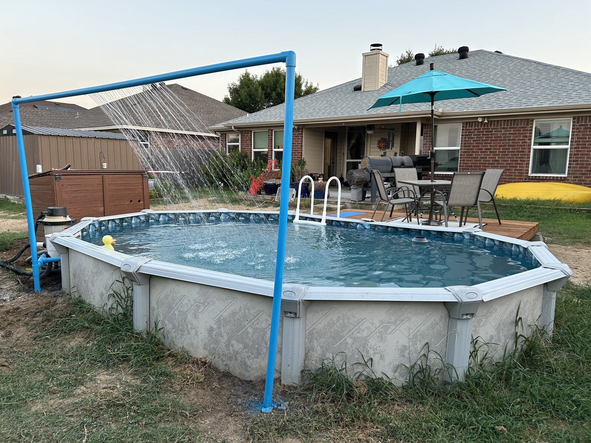
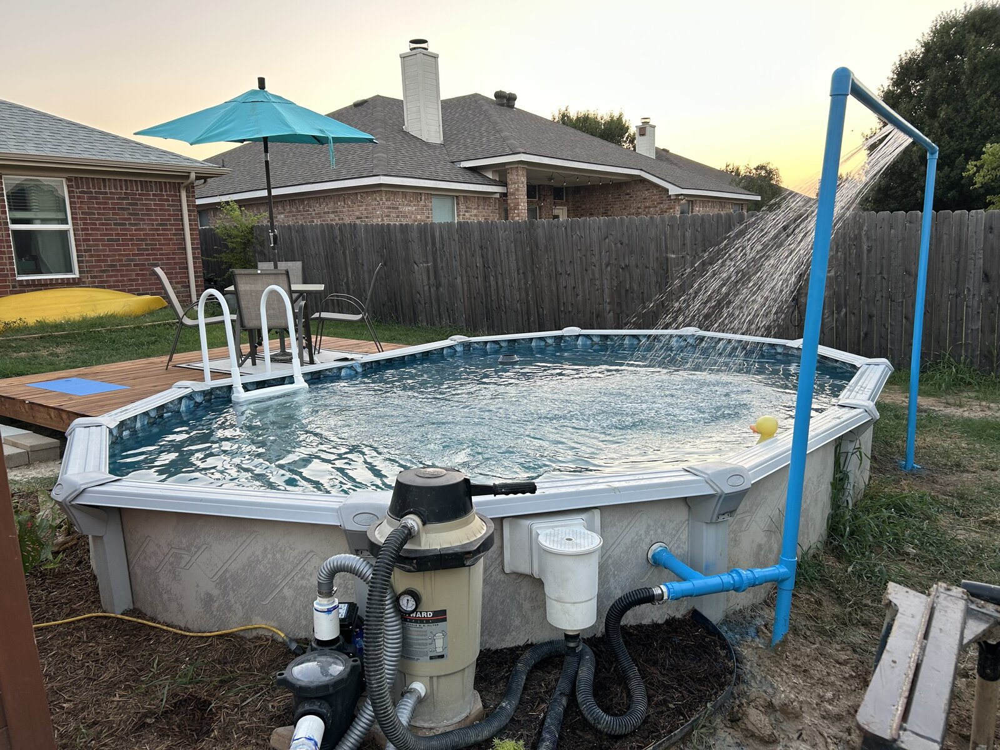
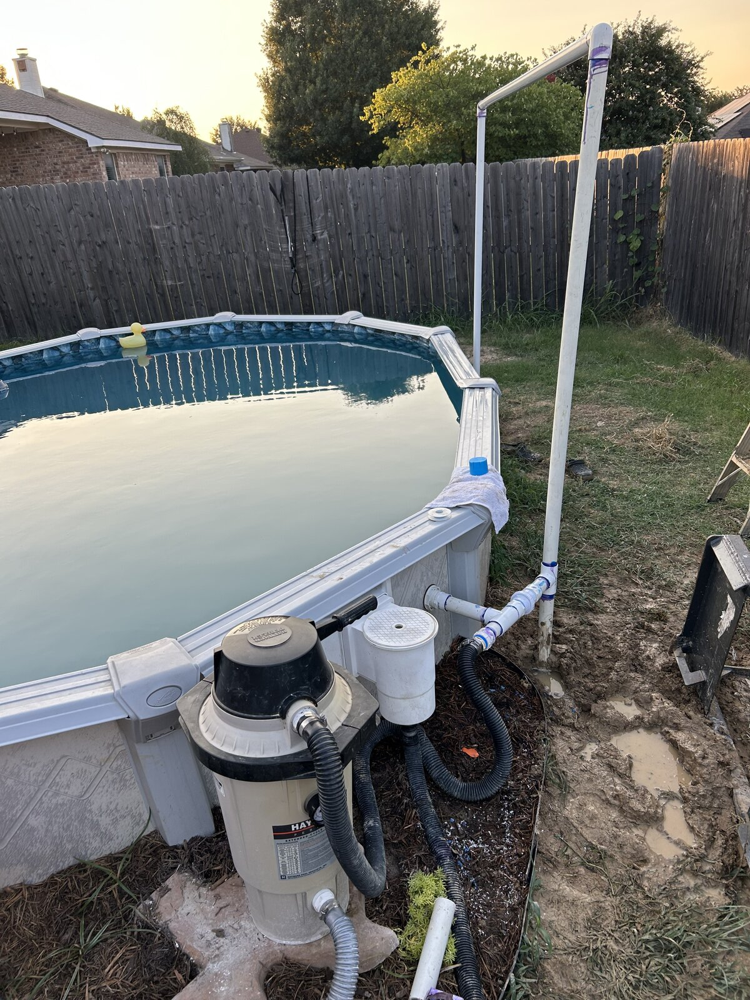
Services
From putting in the pool to keeping it running, here's what we handle.
Above Ground Pool Installation
Soil removal, leveling, and a proper cushion sand base, plus liner replacement, old equipment removal, and permits. Start to finish.
Pool Plumbing
Skimmer, return, and filtration plumbing done right, whether it's new or someone else's shortcuts.
Pump Installation & Repair
New pump installs, and repairs for anything losing pressure or running loud.
Maintenance & Cleaning
Seasonal open and close, filter service, and the routine stuff that keeps the water right.
Custom Water Features
Custom PVC waterfall arcs and other backyard water features, built to spec.
Decks, Patios & Pressure Washing
New builds, repairs, a fresh coat of stain, or pressure washing for the driveway and furniture.
Our Work
Real pool, plumbing, and grading work from Schuler Construction LLC.
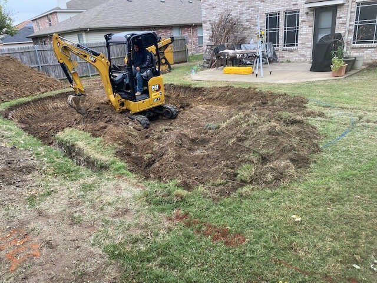
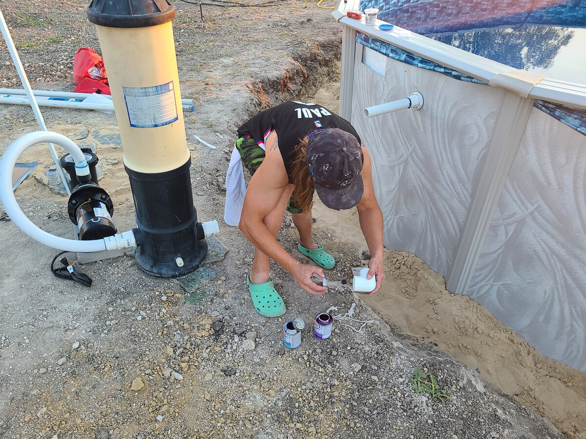
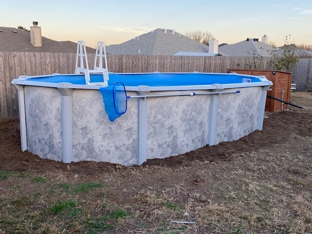
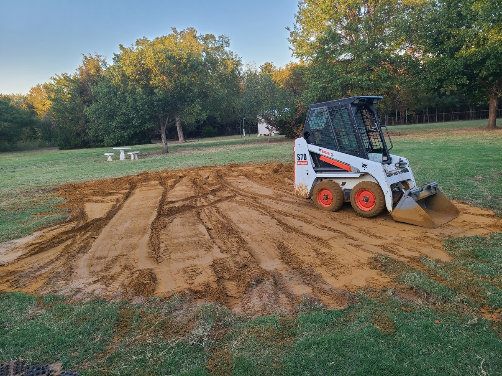
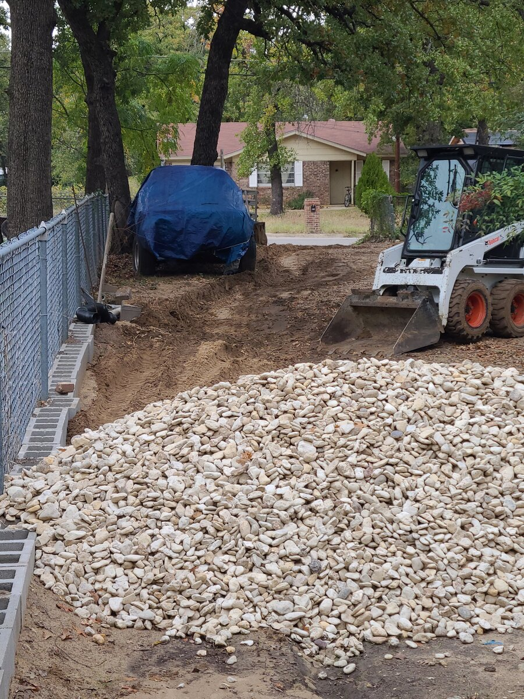
The Concept
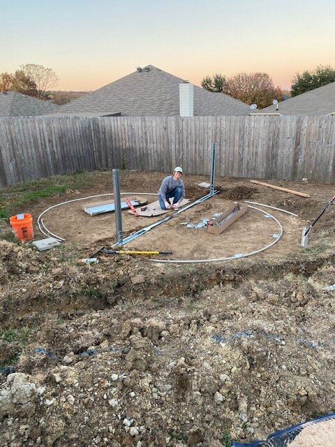
Joe Schuler cut his teeth in landscaping and built his way up from there: outdoor living spaces, decks, roofs, and eventually plumbing, pool, and jacuzzi certifications through Schuler Construction LLC. More than a decade in, he's still the one showing up to run the job himself.
The Poolside Paradise Waterfall takes that same experience and points it at one thing: custom backyard water features, built right, for above ground pools that deserve a centerpiece.
"Finding joy in building your dreams!", Joe Schuler
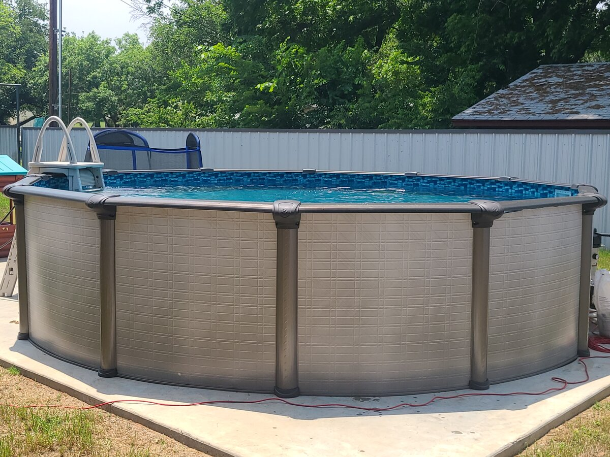
Sound Familiar?
If any of this is your backyard right now, give us a call.
Pool's fine. It's just missing a wow.
A custom waterfall arc turns a standard above ground pool into the centerpiece of the yard.
Pump's making a new noise every week.
We'll diagnose it, fix it, or replace it with something sized right for your pool.
New pool, and the plumbing's on you now.
We handle skimmers, returns, and pump lines so it's done right the first time.
Green water, or it's time to close up.
Seasonal maintenance to get it party-ready, or put it to bed for winter.
Contact
- Phone: 817-357-0180
- Email: Joe@schulerconstructionllc.com
- Address: Arlington, TX area (serving Dallas-Fort Worth)
- Social: facebook.com/SchulerConstructionLLC